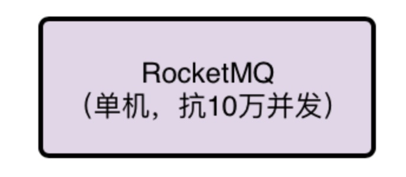
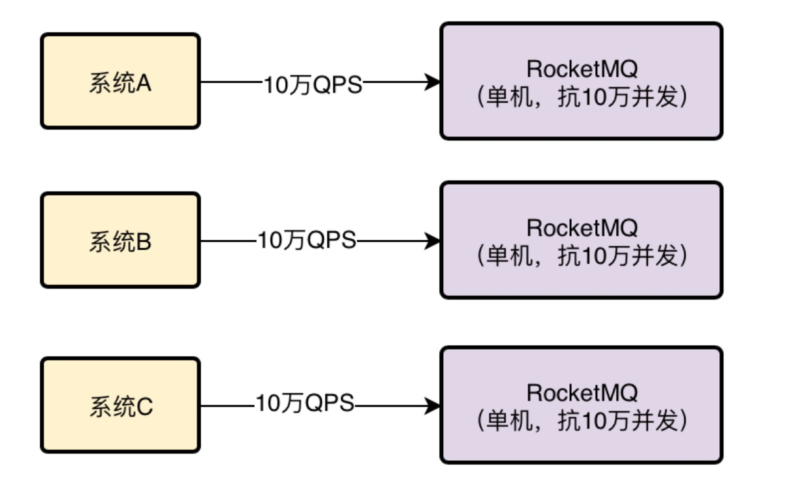
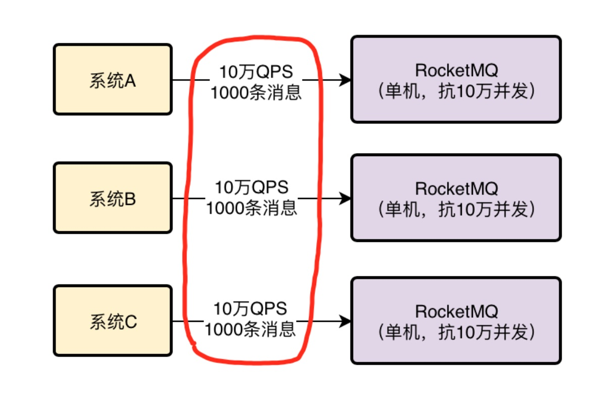
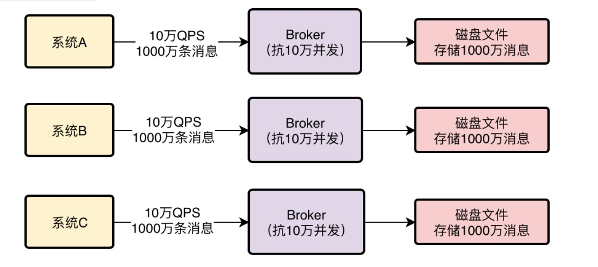
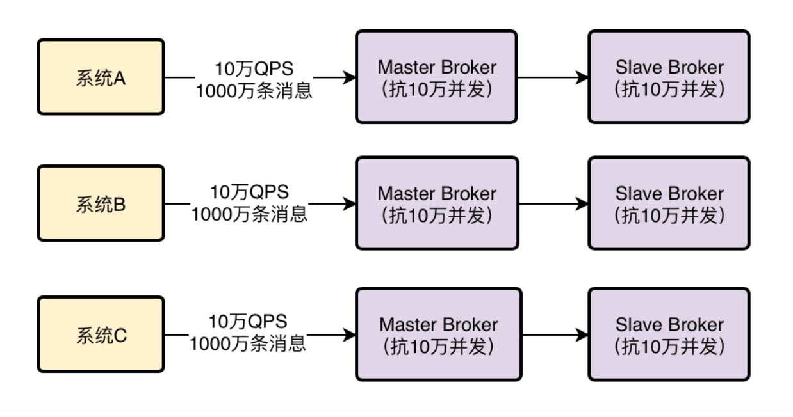
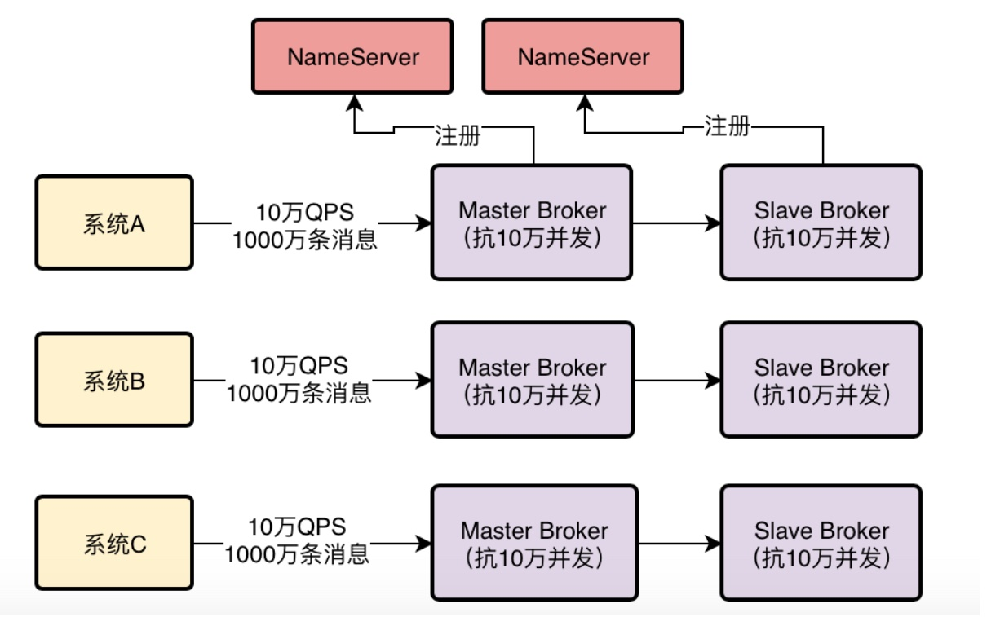
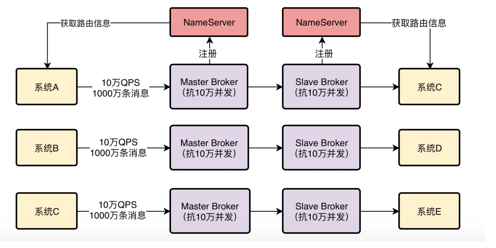

1、来自leader的技术分享任务
今天明哥上班之后，立马找到小猛，给他布置了一个任务。
明哥说，现在既然已经初步完成了MQ技术调研，确定了我们一步到位用阿里开源的RocketMQ，那么就可以进行下一步了，希望你能对RocketMQ技术做一些初步的研究。
第一步，可以看看RocketMQ大体上是如何运行的，也就是他的基本原理，希望你能通过查阅资料，研究一下RocketMQ技术，然后写一份PPT，给团队里的其他同学做一次技术分享。
这里我提几个要求，就是我们想要知道的关于RocketMQ的东西有哪些。比如：
RocketMQ是如何集群化部署来承载高并发访问的？
如果RocketMQ中要存储海量消息，如何实现分布式存储架构？
我希望你能把这些问题搞清楚。
小猛听完明哥的要求之后，立马就开始查阅了大量资料，开始写他的第一份技术分享PPT了。
很快，小猛花了一整天的时间就完成了这次研究和分享PPT的编写，然后跟团队成员约了一个时间集中在一个会议室里为大家进行RocketMQ原理的分享。
2、MQ如何集群化部署来支撑高并发访问？
首先说第一个问题，MQ如何集群化部署来支撑高并发访问？
这里就先讲一个概念，假设RocketMQ部署在一台机器上，即使这台机器配置很高，但是一般来说一台机器也就是支撑10万+的并发访问。
小猛说着打开一张图。

那么这个时候，假设有大量的系统都要往RocketMQ里高并发的写入消息，可能达到每秒有几十万请求，这个时候怎么办呢？
没关系，RocketMQ是可以集群化部署的，可以部署在多台机器上，假设每台机器都能抗10万并发，然后你只要让几十万请求分散到多台机器上就可以了，让每台机器承受的QPS不超过10万不就行了。
小猛说着打开了下一张图。

这其实就是RocketMQ集群化部署抗下高并发的主要原理，当然，具体怎么做才能让系统的流量分散在RocketMQ部署的多台机器上，这个以后再找机会做一个比较详细的分享，今天主要先讲大体上的一个架构原理。
3、MQ如果要存储海量消息应该怎么做？
现在来说第二个问题，MQ会收到大量的消息，这些消息并不是立马就会被所有的消费方获取过去消费的，所以一般MQ都得把消息在自己本地磁盘存储起来，然后等待消费方获取消息去处理。
既然如此，MQ就得存储大量的消息，可能是几百万条，可能几亿条，甚至万亿条，这么多的消息在一台机器上肯定是没法存储的，RocketMQ是如何分布式存储海量消息的呢？
延续上面的图，其实发送消息到MQ的系统会把消息分散发送给多台不同的机器，假设一共有1万条消息，分散发送给10台机器，可能每台机器就是接收到1000条消息，如下图：

其次，每台机器上部署的RocketMQ进程一般称之为Broker，每个Broker都会收到不同的消息，然后就会把这批消息存储在自己本地的磁盘文件里
这样的话，假设你有1亿条消息，然后有10台机器部署了RocketMQ的Broker，理论上不就可以让每台机器存储1000万条消息了吗？
小猛接着打开下一张图。

所以本质上RocketMQ存储海量消息的机制就是分布式的存储
所谓分布式存储，就是把数据分散在多台机器上来存储，每台机器存储一部分消息，这样多台机器加起来就可以存储海量消息了！
4、高可用保障：万一Broker宕机了怎么办？
小猛继续说下一个问题，要是任何一台Broker突然宕机了怎么办？那不就会导致RocketMQ里一部分的消息就没了吗？这就会导致MQ的不可靠和不可用，这个问题怎么解决？
RocketMQ的解决思路是Broker主从架构以及多副本策略。
简单来说，Broker是有Master和Slave两种角色的，小猛打开一张图。

Master Broker收到消息之后会同步给Slave Broker，这样Slave Broker上就能有一模一样的一份副本数据！
这样同一条消息在RocketMQ整个集群里不就有两个副本了，一个在Master Broker里，一个在Slave Broker里！
这个时候如果任何一个Master Broker出现故障，还有一个Slave Broker上有一份数据副本，可以保证数据不丢失，还能继续对外提供服务，保证了MQ的可靠性和高可用性
5、数据路由：怎么知道访问哪个Broker？
现在又有一个问题了，对于系统来说，要发送消息到MQ里去，还要从MQ里消费消息
那么大家怎么知道有哪些Broker？怎么知道要连接到哪一台Broker上去发送和接收消息？这是一个大问题！
所以RocketMQ为了解决这个问题，有一个NameServer的概念，他也是独立部署在几台机器上的，然后所有的Broker都会把自己注册到NameServer上去，NameServer不就知道集群里有哪些Broker了？
如下图所示：

然后对于我们的系统而言，如果他要发送消息到Broker，会找NameServer去获取路由信息，就是集群里有哪些Broker等信息
如果系统要从Broker获取消息，也会找NameServer获取路由信息，去找到对应的Broker获取消息。
小猛说着打开了最后一张图。

基本上这个就是RocketMQ最基本的一个架构原理图。
6、后续的疑问。。。
小猛分享完之后，满心欢喜的期望大家都给他一阵热烈的掌声，结果没想到的是其他的兄弟听完之后，每个人都有一种沉思的表情，似乎有很多的不解，突然大家开始七嘴八舌的问小猛很多的问题：
“小猛，大的架构原理是知道了，但是发送消息的时候面对N多台机器，到底应该向哪一台上面的Broker发送过去？”
“小猛，RocketMQ的数据模型是什么，我们发送消息过去的时候，是发送到什么里面去，队列还是什么？”
”小猛，RocketMQ接收到数据之后是直接写磁盘吗，那性能会不会太差了？”
”小猛，小猛，哎，你怎么不说话了。。。。”
小猛听着大家七嘴八舌的提问，真是汗颜，自己才刚刚了解了一些基本原理，还难以解答这么多的问题啊！
这时明哥出来打了圆场，大家稍安勿躁，稍安勿躁，我正式给小猛一个任务，让他来作为我们团队的RocketMQ技术先锋，大家的问题后续小猛慢慢研究清楚了，然后给大家多做分享，一定让大家对RocketMQ有一个透彻的了解，大家觉得怎么样？
大家一听，一起大喊：小猛，靠你了啊！
小猛瞬间脑门黑线，真是压力山大啊。。。。